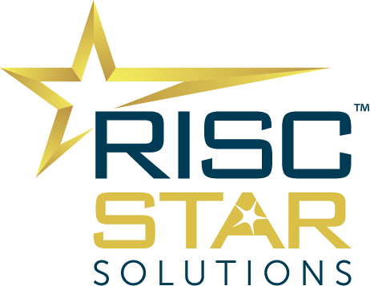

About Me
I'm Guodong Xu (徐国栋), also known online as docular / docularxu. I've spent 20+ years working on Linux kernel development, from early driver bring-up at Motorola, through a decade leading Arm platform work at Linaro, to upstream RISC-V work at RISCstar today. My focus has been on the parts most people never see: BSP development, power management, and performance tuning. I still remember telling my family I worked at Motorola—their first question: "So you sell phones?"
I split my time between writing code and working with customers. At RISCstar, I run China operations while still contributing patches to mainline Linux and the open-source community around it. I give talks at openEuler, RISC-V Summit, and similar events when I have something worth sharing.
Recent Works - Linux Kernel Upstreaming
My public upstream work since joining RISCstar. (The rest stays with clients.)
SpacemiT K3 SoC Support
RVA23 Contributions
- RVA23U64/RVA23S64 mandatory extensions support, patch 6-9 (13 Jan 2026, applied to riscv-dt-for-next)
- riscv: dts: Add "b" ISA extension to existing devicetrees (20 Jan 2026, accepted)
- riscv: cpufeature: Add Supm extension id and validation (25 Jan 2026, under review)
Fixes found during RVA23 work:
- riscv/cpufeature.c: Zk missing Zknh (6 Jan 2026, applied)
- dt-bindings: riscv: update ratified version of h, svinval, svnapot, svpbmt (10 Jan 2026, applied)
SpacemiT K1 SoC Support
- PDMA: Working DMA driver for SpacemiT K1 (22 Aug 2025, merged into v6.18)
- PWM: PWM support for SpacemiT K1 SoC (7 Jul 2025, merged into v6.17)
StarFive JH7110 SoC Support
Recent Works - RVV Performance Benchmarks
Benchmark analyses and performance reports for RISC-V Vector Extension (RVV).
SLEEF (Nonlinear Math)
OpenBLAS (Linear Algebra)
RISC-V Ecosystem Intelligence
Interactive dashboards and analysis tools tracking the evolution of RISC-V support in the Linux Kernel.
Blog Posts & Publications
Sharing insights and experiences from the RISC-V ecosystem and open source community.


Earlier Work: Arm SVE Libraries
I have extensive experience accelerating computing libraries using vector instructions (including Arm SVE/SME and RISC-V Vector Extension). The contributions listed here represent only my open source work; significant additional contributions to commercial software libraries are not shown.
BLIS (BLAS-like Library Instantiation Software)
Added two kernels (dgemm and dpackm) using ARM SVE.
ISA-L (Intel Intelligent Storage Acceleration Library)
Enabled SVE (Scalable Vector Extension) support in ISA-L erasure code for aarch64 architecture.
Education & Experience
Current
Director of China Operations, RISCstar — 2024.09 – Present
(Beijing/Remote)
RISCstar provides low‑level software solutions for Arm and RISC‑V. I drive China
operations across BD/Sales and technical delivery: brand building, opportunity
discovery, contract management, technical scoping/effort estimates, coordinating global
teams, and directly contributing to Linux kernel upstream work for domestic RISC‑V
chips. Secured multiple contracts, including the company’s first global deal; delivered
talks at openEuler, RISC-V Summit and RVEI events.
Previously
Senior Tech Lead, Linaro — 2012.01 – 2024.09: Led Linaro/HiSilicon Landing Team; Linux kernel, SVE/SVE2, Big Data, OpenSSL 3.0, JDK on Kirin/HiKey/Kunpeng; member relations and technical leadership.
Manager of Software Development, Flextronics (伟创力) — 2010.09 – 2011.10: Led BSP for dual‑screen Android; drivers/HAL for battery, charger, USB, PM, HDMI, Wi‑Fi.
Assistant Manager / Software Development, SK Telecom — 2007.12 – 2010.09: Smart SIM + Android; USB connectivity; kernel upgrades; Android porting for Smart SIM.
Senior Software Engineer, Motorola Mobile Devices — 2003.05 – 2007.11: Power management & Wi‑Fi driver on EZX (MontaVista 2.4.10); contributed to A910, first dual‑mode phone.
Education
- M.S., Computer Science — Beijing University of Posts and Telecommunications (1999–2002)
- B.S., Computer Science — Qingdao University (1995–1999)
Selected Skills
Contact
Beijing, China
docularxu@msn.com · (+86) 138‑1154‑8651
LinkedIn: linkedin.com/in/docularxu
Badges & Certifications
Conference Speaking Engagements
Timeline
"Accelerating High-Performance Computing with Arm SVE Vector Instructions"
"Optimizing HDFS Performance: Balanced Utilization of Hardware Accelerators and ARM64 Multi-core Capabilities on KUNPENG920"
"Optimizing Workloads with Arm64 & Hardware Accelerators"
Topics: HBase/HDFS Transparent Encryption, AES/SM4, OpenSSL 3.0
"Advantages and Challenges of Using UADK Acceleration in Big Data"
"Embracing Community, Open and Win-Win"
"Crossing the Chasm: Ecosystem Transition and Challenges from Arm to RISC-V"
"Current Status of RISC-V Linux Kernel Open Source Upstream"
"Understanding RISC-V Ecosystem Development Stages and Construction Path from the Perspective of Arm Ecosystem Development"
"RISC-V Linux Kernel / Boot Firmware 2025 Progress Report: Challenges from Upstream and Downstream"
"Moving to RISC-V Vector: A Practical Journey of AI Operator Optimization"
"Porting Code to RISC-V: Course Development practices accelerating the RISC-V developer ecosystem"
English
- 16 May 2022, openEuler + Linaro Developer Day, Talk: "Accelerating High-Performance Computing with Arm SVE Vector Instructions"
- 19 Aug 2023, ApacheCon 2023, Talk:
"Optimizing HDFS Performance: Balanced Utilization of Hardware Accelerators and
ARM64 Multi-core Capabilities on KUNPENG920"
Topics: HDFS, Big Data, MD5, Multi-buffer, UADK Acceleration, OPENSSL - 10 Apr 2024, FOSSASIA Summit 2024, Ha Noi, Talk:
"Optimizing Workloads with Arm64 & Hardware Accelerators"
Topics: HBase/HDFS Transparent Encryption, AES/SM4, OpenSSL 3.0 - 5 Jul 2024, openEuler Big Data Meetup, Talk: "Advantages and Challenges of Using UADK Acceleration in Big Data"
- 18 Dec 2024, Shanghai Zhangjiang, CIX Technology 2024 Ecosystem Conference, Panel Discussion with ecosystem leaders from Red Hat, Ubuntu, Deepin, Kylin, and openEuler: "Embracing Community, Open and Win-Win"
- 28 Dec 2024, RISC-V Industry Development Conference 2024, Talk: "Crossing the Chasm: Ecosystem Transition and Challenges from Arm to RISC-V"
- 28 Feb 2025, 2025 China RISC-V Ecosystem Conference, Talk: "Current Status of RISC-V Linux Kernel Open Source Upstream"
- 22 Mar 2025, openEuler on RISC-V & deepin Meetup-Beijing, Lightning Talk: "Understanding RISC-V Ecosystem Development Stages and Construction Path from the Perspective of Arm Ecosystem Development"
- 16 Jul 2025, The 5th RISC-V Summit China, Shanghai, Poster: "RISC-V Linux Kernel / Boot Firmware 2025 Progress Report: Challenges from Upstream and Downstream"
- 23 Oct 2025, RISC-V Summit 2025 NA, Talk: "Moving to RISC-V Vector: A Practical Journey of AI Operator Optimization"
- 25 Nov 2025, RISC-V Industry Development Conference and RDSA International Summit, Zhuhai/Macao, Talk: "Porting Code to RISC-V: Course Development practices accelerating the RISC-V developer ecosystem"
开源社区
运作、参与和贡献
《优化HDFS性能:在KUNPENG920上实现硬件加速器和ARM64多核能力的均衡利用》
主要内容：HDFS，大数据，MD5，Multi-buffer，UADK 加速，OPENSSL
《Optimizing Workloads with Arm64 & Hardware Accelerators》
主要内容：HBase/HDFS Transparent Encryption，AES/SM4，OpenSSL 3.0
《跨越鸿沟：从Arm到RISC-V的生态转型与挑战》
《RISC-V Linux内核开源upstream现状》
《RISC-V Linux 内核/启动固件2025进展报告》
"Moving to RISC-V Vector: A Practical Journey of AI Operator Optimization"
中文
- 16 May 2022，openEuler + Linaro Developer Day，演讲《利用 Arm SVE 向量指令加速高性能计算》
- 19 Aug 2023，ApacheCon
2023，《优化HDFS性能:在KUNPENG920上实现硬件加速器和ARM64多核能力的均衡利用》
主要内容：HDFS，大数据，MD5，Multi-buffer，UADK 加速，OPENSSL - 10 Apr 2024，FOSSASIA Summit 2024，Ha Noi，演讲《Optimizing
Workloads with Arm64 & Hardware Accelerators》
主要内容：HBase/HDFS Transparent Encryption，AES/SM4，OpenSSL 3.0 - 5 Jul 2024，openEuler 大数据 Meetup，演讲《大数据领域使用 UADK 加速的优势和挑战》
- 18 Dec 2024，上海张江，此芯科技2024生态大会，圆桌论坛：与来自 红帽 / Ubuntu / 统信 Deepin / 麒麟 openEuler 的生态负责人共话《拥抱社区，开放共赢》
- 28 Dec 2024，RISC-V 产业发展大会 2024，演讲《跨越鸿沟：从Arm到RISC-V的生态转型与挑战》
- 28 Feb 2025，2025 中国 RISC-V 生态大会，演讲《RISC-V Linux内核开源upstream现状》
- 22 Mar 2025，openEuler on RISC-V & deepin Meetup-北京站，闪电演讲《从 Arm 生态的发展看 RISC-V 生态的发展阶段和构建之路》
- 16 Jul 2025，第五届RISC-V中国峰会，The 5th RISC-V Summit China, 上海。Posters，《RISC-V Linux 内核/启动固件2025进展报告 - 从上游支持到生产级部署的实践与挑战》
- 23 Oct 2025，RISC-V Summit 2025 NA，"Moving to RISC-V Vector: A Practical Journey of AI Operator Optimization - Guodong Xu, RISCstar Solutions"
- 25 Nov 2025，RISC-V产业发展大会暨RDSA国际论坛，人才分论坛，珠海/澳门，演讲《〈Porting Code to RISC-V〉：加速 RISC-V 开发者生态的课程实践》
Other Videos & References
Additional talks, interviews, and resources.